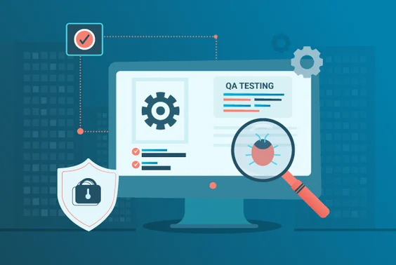

Hola! Soy Lisbet
Pero puedes llamarme Lis, soy una profesional altamente capacitada en el ámbito del aseguramiento y control de calidad del software, con una sólida trayectoria en la industria de TI. Mi objetivo es seguir perfeccionando mis habilidades y conocimientos, aportando un enfoque especializado y riguroso a la evaluación de la calidad del software.
Con una amplia experiencia como Tester Semi Senior, aspiro a continuar creciendo en mi carrera y aplicar de manera efectiva los principios y las mejores prácticas de calidad en proyectos de alta complejidad. Mi compromiso con la excelencia y mi capacidad para trabajar en equipo me permiten garantizar la entrega de productos de software confiables y de alto rendimiento.
